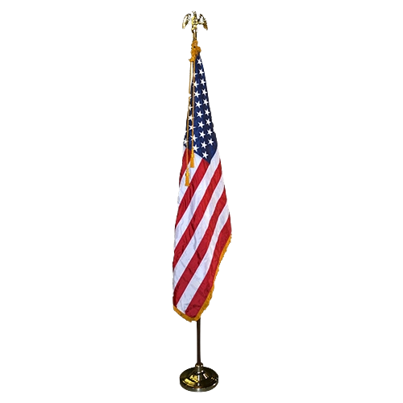

George Washington (February 22, 1732[b] – December 14, 1799) was an American military officer, statesman, and Founding Father who served as the first president of the United States from 1789 to 1797. Appointed by the Continental Congress as commander of the Continental Army, Washington led Patriot forces to victory in the American Revolutionary War and served as president of the Constitutional Convention of 1787, which created and ratified the Constitution of the United States and the American federal government. Washington has been called the "Father of his Country" for his manifold leadership in the nation's founding.[10]
Washington's first public office, from 1749 to 1750, was as surveyor of Culpeper County, Virginia. He subsequently received his first military training and was assigned command of the Virginia Regiment during the French and Indian War. He was later elected to the Virginia House of Burgesses and was named a delegate to the Continental Congress, where he was appointed Commanding General of the Continental